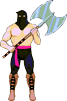

This hyperlink will jump you to the latest toolkit documentation, including tools for programmers, ARM tools, tools for graphics artists, and tools for sound designers.
This hyperlink will jump you to the latest Portfolio programmer's guides and reference documentation. You can view all of the documentation necessary to program the Portfolio system, graphics, audio, and music.
 Click here to read the legal fine print.